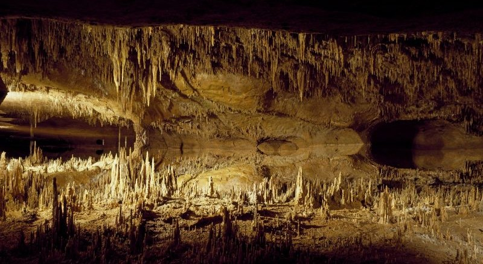

Finalmente, después de mucho pensar decidiste ingresar en la cueva de la izquierda,
una cueva cuya superficie
se encuentra cubierta por imperfecciones y se hace difícil caminar.
Por fortuna para los aventureros, es una cueva que deja entrar los rayos del sol y hay buena visión.
con el afán de encontrar el tesoro, se adentran cada vez más en la cueva.
A medida que avanzan, comienzan a escuchar un viento que cada vez se hace más fuerte, quizás entre por las aberturas de la Montañana.
Parece que el final de la cueva está cerca y al llegar casi al final de la misma,
Tú y tus acompañantes notan que el viento no era otra cosa que la respiración del gran dragón que acechaba los poblados.
Al estar casi mimetizado con las piedras del lugar, no notaron su presencia y se acercaron mucho.
Ya es demasiado tarde para escapar....